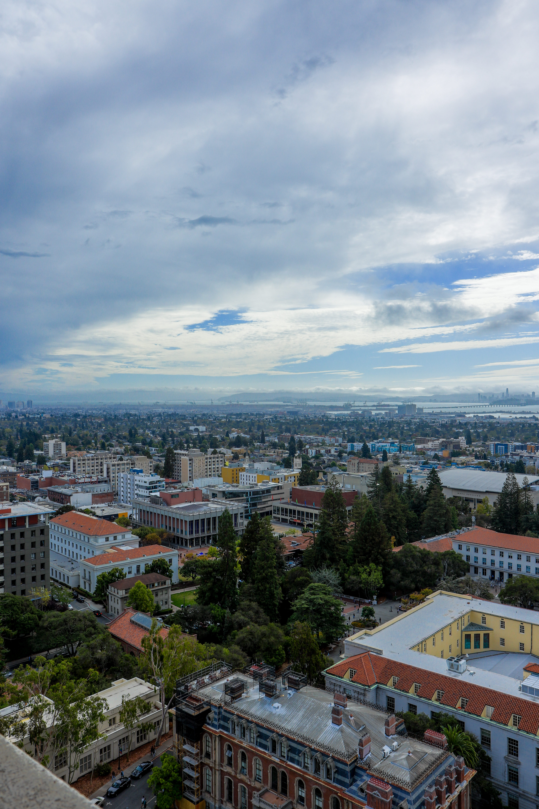
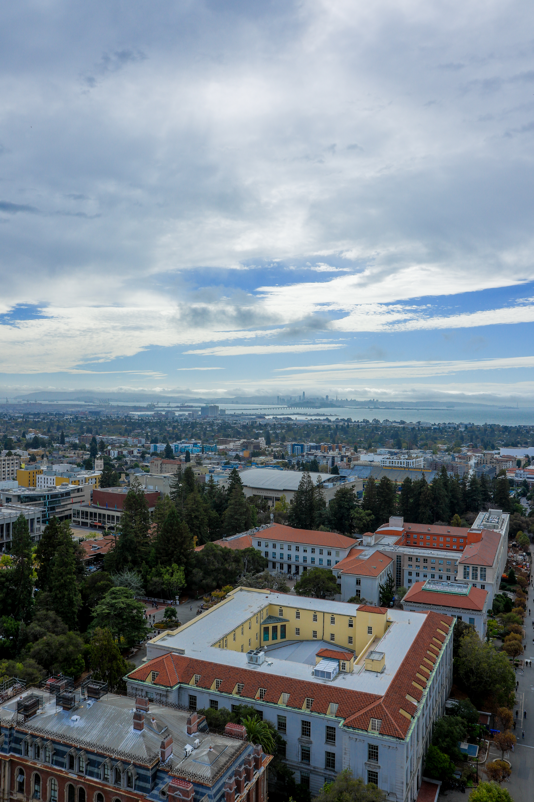
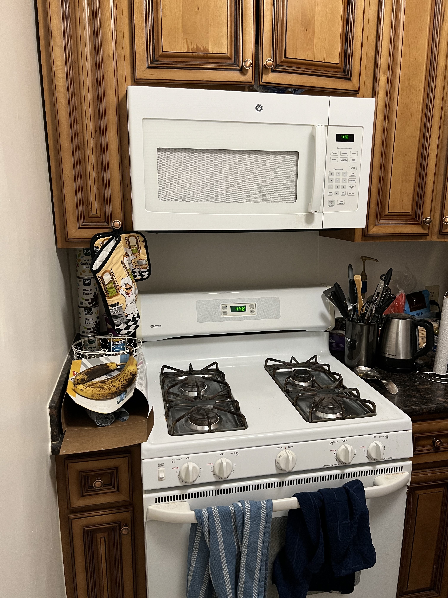
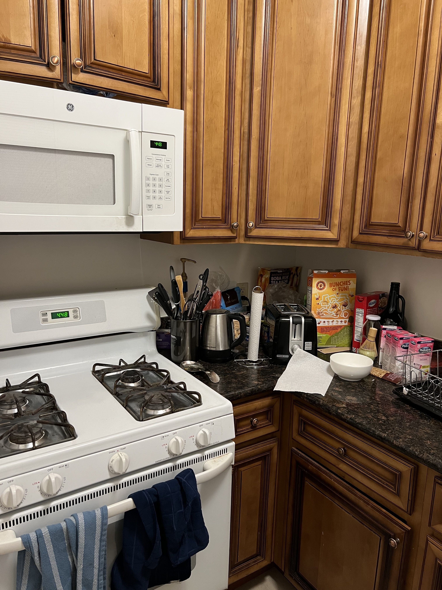
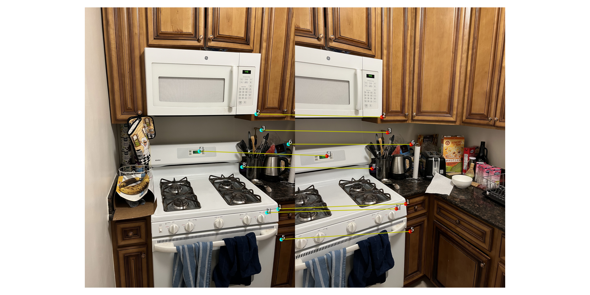
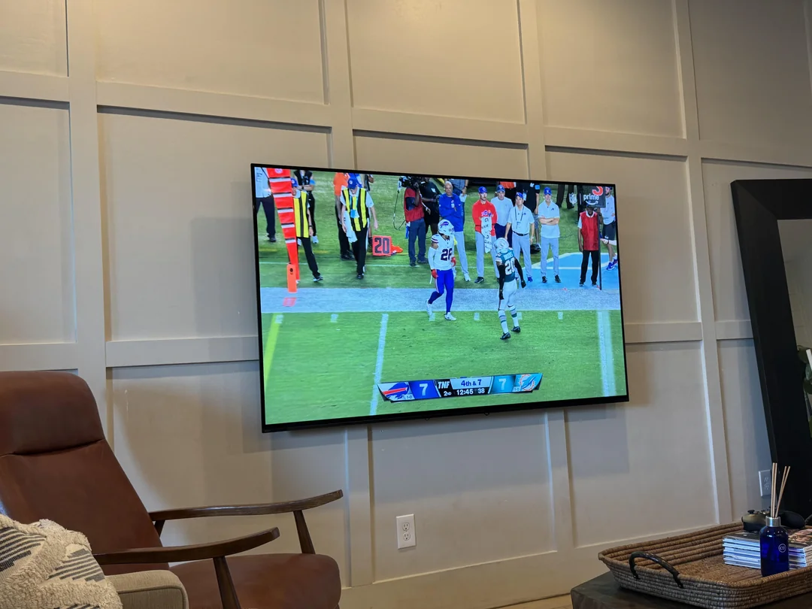
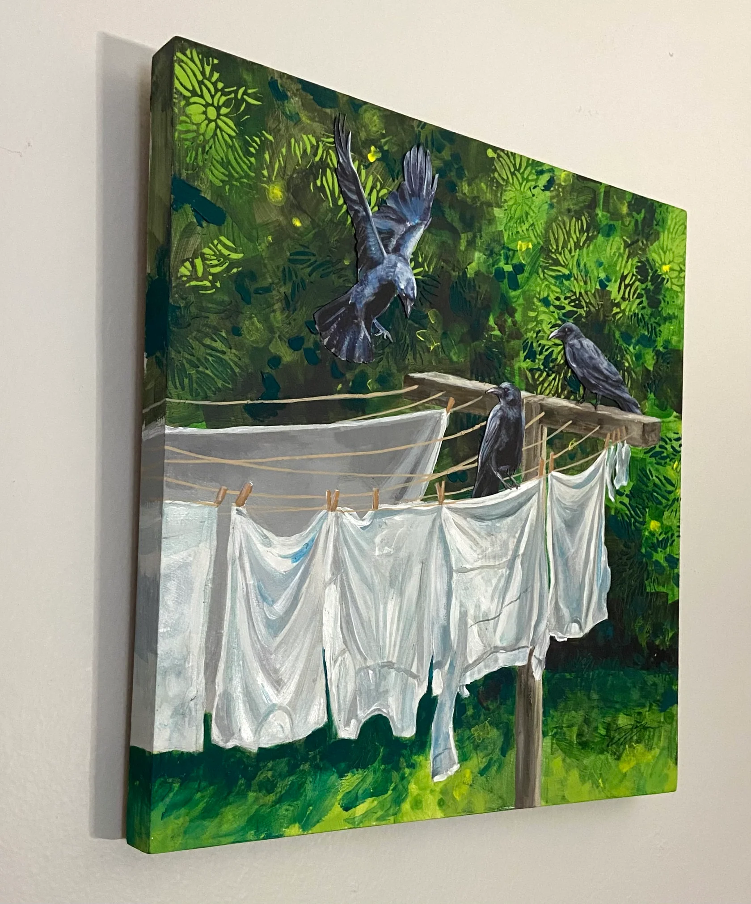
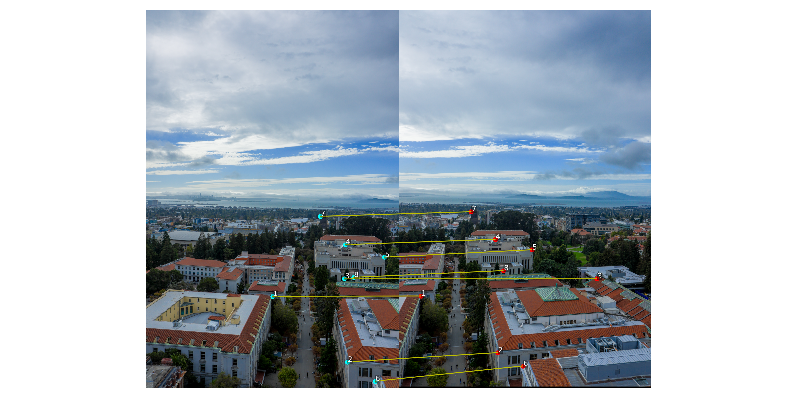

Overview
In this project I implement homography estimation and inverse warping from scratch and use them to rectifiy images and build panoramas. I recover homographies via least squares, implement nearest-neighbor and bilinear resampling, and blend registered images with alpha masks to form mosaics.
- Languages/libs: Python, NumPy, Matplotlib, OpenCV (for IO/resize only)
- Core functions:
computeH,warpImageNearestNeighbor,warpImageBilinear - Not used:
cv2.findHomography,cv2.warpPerspective,skimage.transform.warp
A.1 — Image Sets (Fixed COP)
All sequences were captured from a fixed center of projection — I stood in one place and rotated the camera slightly between shots. This makes the transform between images a projective homography, which is exactly what we estimate in A.2.




A.2 — Recovering Homographies (computeH)
I estimate the 3×3 projective transform p′ ≃ H p from hand‑clicked
correspondences using a linear least‑squares solve. Each match contributes two
equations; with >4 matches the system is overdetermined and I solve for the 8 unknowns
(fixing h₃₃=1) via SVD/LS. Points were clicked in Pixspy and saved to CSVs as
rows x, y, x′, y′.
Symbolic System of Equations
For each correspondence between points (x, y) → (x′, y′), the homography satisfies:
x′ = (h₁₁x + h₁₂y + h₁₃) / (h₃₁x + h₃₂y + h₃₃)
y′ = (h₂₁x + h₂₂y + h₂₃) / (h₃₁x + h₃₂y + h₃₃)
Let h = [h₁₁ h₁₂ h₁₃ h₂₁ h₂₂ h₂₃ h₃₁ h₃₂]ᵀ and fix h₃₃=1.
For each (x,y) → (x′,y′), we write two rows of A h = b:
Row x′: [ x y 1 0 0 0 -x·x′ -y·x′ ] · h = x′
Row y′: [ 0 0 0 x y 1 -x·y′ -y·y′ ] · h = y′
Stacking all pairs yields a 2N×8 matrix A and a 2N-vector b.
I solve the least‑squares problem h = argmin‖A h − b‖₂ (via SVD), then reshape
into H with h₃₃=1.


System of Equations & Result
Note: The matrix dump below is from an earlier DLT-style 2N×9 debug run.
My final implementation uses the least‑squares form A h = b with h₃₃=1,
so A is 2N×8 and b is length 2N.
Loaded 8 correspondences from correspondences/hdr_campanile/points_01_02.csv
=== Correspondence visualization saved to ===
outputs/campanile_01_02_correspondences.png
=== First few rows of A (2N×9) ===
[[ -2167. -4541. -1. 0. 0. 0. 1805111.
3782653. 833.]
[ 0. 0. 0. -2167. -4541. -1. 9961699.
20874977. 4597.]
[ -3011. -4442. -1. 0. 0. 0. 5025359.
7413698. 1669.]
[ 0. 0. 0. -3011. -4442. -1. 13293565.
19611430. 4415.]
[ -3215. -5198. -1. 0. 0. 0. 5954180.
9626696. 1852.]
[ 0. 0. 0. -3215. -5198. -1. 16441510.
26582572. 5114.]
[ -3175. -4191. -1. 0. 0. 0. 5788025.
7640193. 1823.]
[ 0. 0. 0. -3175. -4191. -1. 13204825.
17430369. 4159.]]
=== Homography H (p2 ~ H p1) ===
[[ 1.290306 -0.006082 -1782.799716]
[ 0.230369 1.213563 -594.572715]
[ 0.000078 0.000002 1. ]]
Reprojection errors (px): [3.845 1.599 3.218 1.264 1.469 1.407 2.674 2.352]
Stats: {'mean': 2.228, 'median': 1.975, 'max': 3.845, 'min': 1.264}
A.3 — Inverse Warping + Interpolation
I implemented inverse mapping samplers with two interpolants: nearest neighbor (fast, blocky) and bilinear (smoother). I predict the output canvas by transforming the 4 corners through H and use an alpha mask for valid samples.




Nearest vs Bilinear
Nearest neighbor: each output pixel samples the closest input pixel (fast, but blocky and jagged on slants).
Bilinear: takes a weighted average of the four nearest input pixels, producing smooth, anti-aliased results (slower but visibly better).
In both cases I use inverse warping: for every output location, map back through H⁻¹ to sample the source; this avoids holes.
A.4 — Image Mosaics (Blending)
After chaining homographies to a middle “anchor” frame, I warp all images into that reference and blend them by feathered alpha (center-weighted falloff to zero at image borders). This reduces hard seams while keeping detail where overlaps agree.


Procedure & Notes
- 1) Pick a middle photo to keep steady. I compute a transform from each other photo into this “anchor.”
- 2) Warp every photo onto one big canvas using the transforms (homographies) I estimated from point matches.
- 3) Blend overlaps with soft weights that are strongest near the center of each photo and fade to zero at the edges. Where photos overlap, the pixels are just a weighted average — this hides a hard seam.
- If a seam still shows, it’s usually because the inputs disagree (moving people, lighting change, or bad clicks). More points or re-clicking fixes it.
Debugging & Issues
Two problems came up while building the mosaics and how I addressed them:
1) A bad correspondence breaks a pair
One clicked point for Campanile 03→04 was wrong. The pair overlay looked suspicious and the mosaic ghosted badly. Re-clicking or commenting out the bad row fixed it.


2) Very wide field of view (near 180°)
Planar homographies stretch perspective strongly at the ends of a very wide panorama. Even with good alignment, straight lines can bend and edges look “pulled”. A cylindrical projection maps rotations to near-horizontal shifts and usually looks much better for super-wide pans (not required for this assignment, but that’s why some tools switch projections automatically).

Takeaways
- DLT + normalization gives stable homographies from hand-clicked points.
- Inverse warping with bilinear interpolation is the sweet spot for quality vs speed.
- Feathered alpha blending hides seams when registration is good; poor clicks → ghosting.
- For very wide FOVs, cylindrical warps would further reduce distortions (not required here).